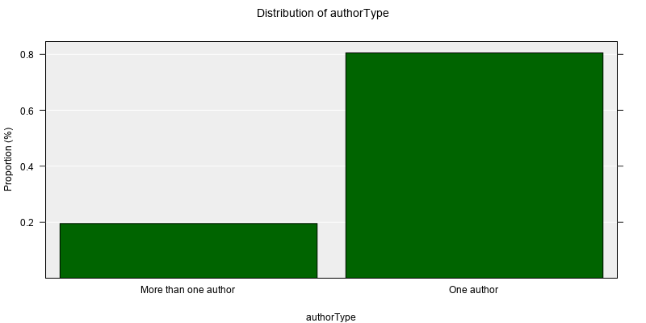
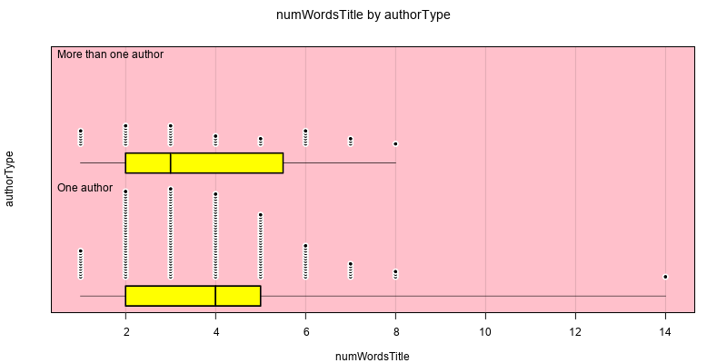
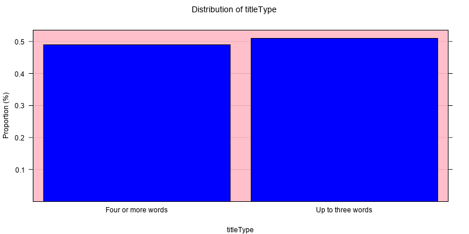

Lab 4
Visualising data from APIs
In this lab, you will learn how to get data from an API and to visualise this data using iNZight plots created with R code.
The recommended start date for this lab is Week 8, as you’ll use statistical and computational ideas covered in Topic 3A (Week 7).
How can you access books online?
We’ll use data from Google Books for this lab, so watch the short video below to find out a little more about about this digital service and how people use it!
Just a reminder that you can also access thousands of books online through our university library!
Go find a book!
Head to the Google books search page (click this link) and search for books about data science.
What data or variables can you see available for a book when you click on its link? What kinds of things could we compare across books from the same search?
Then watch the short video below to see how many of the variables you found that Anna found as well!
Getting data
We can get data about books from the Google books API using a few different ways of searching:
- Search for books using general key words
- Search for books from within a certain category (
subject:) - Search for books with a certain word or words in the title (
intitle:) - Search for books by a certain author (
inauthor:)
To use the Google Books API, we first have to form a query to send to the service, which is how we ask for books! In the video, I showed how you can start to spot the kinds of queries used in the URLs of web pages.
Click on the link below to open a “web page” - it won’t look like the web pages you are used to seeing, as it will only show text.
https://www.googleapis.com/books/v1/volumes?q=intitle:%22data+science%22
What the JSON?
What you will see on the web page is “data” formatted in way for computers to understand but you’ll probably be able to read it and make sense of it as well! This particular structure is called JSON (JavaScript Object Notation). The example below shows you data from the first book in the search results, as JSON - look at all the data/variables!
## {
## "kind": [
## "books#volume"
## ],
## "id": [
## "g-xqDwAAQBAJ"
## ],
## "etag": [
## "rk43y6+TrUM"
## ],
## "selfLink": [
## "https://www.googleapis.com/books/v1/volumes/g-xqDwAAQBAJ"
## ],
## "volumeInfo": {
## "title": [
## "Data Science and Predictive Analytics"
## ],
## "subtitle": [
## "Biomedical and Health Applications using R"
## ],
## "authors": [
## [
## "Ivo D. Dinov"
## ]
## ],
## "publisher": [
## "Springer"
## ],
## "publishedDate": [
## "2018-04-07"
## ],
## "description": [
## "Over the past decade, Big Data have become ubiquitous in all economic sectors, scientific disciplines, and human activities. They have led to striking technological advances, affecting all human experiences. Our ability to manage, understand, interrogate, and interpret such extremely large, multisource, heterogeneous, incomplete, multiscale, and incongruent data has not kept pace with the rapid increase of the volume, complexity and proliferation of the deluge of digital information. There are three reasons for this shortfall. First, the volume of data is increasing much faster than the corresponding rise of our computational processing power (Kryder’s law > Moore’s law). Second, traditional discipline-bounds inhibit expeditious progress. Third, our education and training activities have fallen behind the accelerated trend of scientific, information, and communication advances. There are very few rigorous instructional resources, interactive learning materials, and dynamic training environments that support active data science learning. The textbook balances the mathematical foundations with dexterous demonstrations and examples of data, tools, modules and workflows that serve as pillars for the urgently needed bridge to close that supply and demand predictive analytic skills gap. Exposing the enormous opportunities presented by the tsunami of Big data, this textbook aims to identify specific knowledge gaps, educational barriers, and workforce readiness deficiencies. Specifically, it focuses on the development of a transdisciplinary curriculum integrating modern computational methods, advanced data science techniques, innovative biomedical applications, and impactful health analytics. The content of this graduate-level textbook fills a substantial gap in integrating modern engineering concepts, computational algorithms, mathematical optimization, statistical computing and biomedical inference. Big data analytic techniques and predictive scientific methods demand broad transdisciplinary knowledge, appeal to an extremely wide spectrum of readers/learners, and provide incredible opportunities for engagement throughout the academy, industry, regulatory and funding agencies. The two examples below demonstrate the powerful need for scientific knowledge, computational abilities, interdisciplinary expertise, and modern technologies necessary to achieve desired outcomes (improving human health and optimizing future return on investment). This can only be achieved by appropriately trained teams of researchers who can develop robust decision support systems using modern techniques and effective end-to-end protocols, like the ones described in this textbook. • A geriatric neurologist is examining a patient complaining of gait imbalance and posture instability. To determine if the patient may suffer from Parkinson’s disease, the physician acquires clinical, cognitive, phenotypic, imaging, and genetics data (Big Data). Most clinics and healthcare centers are not equipped with skilled data analytic teams that can wrangle, harmonize and interpret such complex datasets. A learner that completes a course of study using this textbook will have the competency and ability to manage the data, generate a protocol for deriving biomarkers, and provide an actionable decision support system. The results of this protocol will help the physician understand the entire patient dataset and assist in making a holistic evidence-based, data-driven, clinical diagnosis. • To improve the return on investment for their shareholders, a healthcare manufacturer needs to forecast the demand for their product subject to environmental, demographic, economic, and bio-social sentiment data (Big Data). The organization’s data-analytics team is tasked with developing a protocol that identifies, aggregates, harmonizes, models and analyzes these heterogeneous data elements to generate a trend forecast. This system needs to provide an automated, adaptive, scalable, and reliable prediction of the optimal investment, e.g., R&D allocation, that maximizes the company’s bottom line. A reader that complete a course of study using this textbook will be able to ingest the observed structured and unstructured data, mathematically represent the data as a computable object, apply appropriate model-based and model-free prediction techniques. The results of these techniques may be used to forecast the expected relation between the company’s investment, product supply, general demand of healthcare (providers and patients), and estimate the return on initial investments."
## ],
## "industryIdentifiers": [
## {
## "type": [
## "ISBN_13"
## ],
## "identifier": [
## "9783319723471"
## ]
## },
## {
## "type": [
## "ISBN_10"
## ],
## "identifier": [
## "3319723472"
## ]
## }
## ],
## "readingModes": {
## "text": [
## true
## ],
## "image": [
## true
## ]
## },
## "printType": [
## "BOOK"
## ],
## "categories": [
## [
## "Computers"
## ]
## ],
## "maturityRating": [
## "NOT_MATURE"
## ],
## "allowAnonLogging": [
## false
## ],
## "contentVersion": [
## "0.1.2.0.preview.3"
## ],
## "panelizationSummary": {
## "containsEpubBubbles": [
## false
## ],
## "containsImageBubbles": [
## false
## ]
## },
## "imageLinks": {
## "smallThumbnail": [
## "http://books.google.com/books/content?id=g-xqDwAAQBAJ&printsec=frontcover&img=1&zoom=5&edge=curl&source=gbs_api"
## ],
## "thumbnail": [
## "http://books.google.com/books/content?id=g-xqDwAAQBAJ&printsec=frontcover&img=1&zoom=1&edge=curl&source=gbs_api"
## ]
## },
## "language": [
## "en"
## ],
## "previewLink": [
## "http://books.google.co.nz/books?id=g-xqDwAAQBAJ&printsec=frontcover&dq=intitle:%22data+science%22&hl=&cd=1&source=gbs_api"
## ],
## "infoLink": [
## "https://play.google.com/store/books/details?id=g-xqDwAAQBAJ&source=gbs_api"
## ],
## "canonicalVolumeLink": [
## "https://play.google.com/store/books/details?id=g-xqDwAAQBAJ"
## ]
## },
## "saleInfo": {
## "country": [
## "NZ"
## ],
## "saleability": [
## "FOR_SALE"
## ],
## "isEbook": [
## true
## ],
## "listPrice": {
## "amount": [
## 168.98
## ],
## "currencyCode": [
## "NZD"
## ]
## },
## "retailPrice": {
## "amount": [
## 118.29
## ],
## "currencyCode": [
## "NZD"
## ]
## },
## "buyLink": [
## "https://play.google.com/store/books/details?id=g-xqDwAAQBAJ&rdid=book-g-xqDwAAQBAJ&rdot=1&source=gbs_api"
## ],
## "offers": [
## {
## "finskyOfferType": [
## 1
## ],
## "listPrice": {
## "amountInMicros": [
## 168980000
## ],
## "currencyCode": [
## "NZD"
## ]
## },
## "retailPrice": {
## "amountInMicros": [
## 118290000
## ],
## "currencyCode": [
## "NZD"
## ]
## }
## }
## ]
## },
## "accessInfo": {
## "country": [
## "NZ"
## ],
## "viewability": [
## "PARTIAL"
## ],
## "embeddable": [
## true
## ],
## "publicDomain": [
## false
## ],
## "textToSpeechPermission": [
## "ALLOWED_FOR_ACCESSIBILITY"
## ],
## "epub": {
## "isAvailable": [
## true
## ],
## "acsTokenLink": [
## "http://books.google.co.nz/books/download/Data_Science_and_Predictive_Analytics-sample-epub.acsm?id=g-xqDwAAQBAJ&format=epub&output=acs4_fulfillment_token&dl_type=sample&source=gbs_api"
## ]
## },
## "pdf": {
## "isAvailable": [
## true
## ],
## "acsTokenLink": [
## "http://books.google.co.nz/books/download/Data_Science_and_Predictive_Analytics-sample-pdf.acsm?id=g-xqDwAAQBAJ&format=pdf&output=acs4_fulfillment_token&dl_type=sample&source=gbs_api"
## ]
## },
## "webReaderLink": [
## "http://play.google.com/books/reader?id=g-xqDwAAQBAJ&hl=&printsec=frontcover&source=gbs_api"
## ],
## "accessViewStatus": [
## "SAMPLE"
## ],
## "quoteSharingAllowed": [
## false
## ]
## },
## "searchInfo": {
## "textSnippet": [
## "There are three reasons for this shortfall. First, the volume of data is increasing much faster than the corresponding rise of our computational processing power (Kryder’s law > Moore’s law)."
## ]
## }
## }
## Can you spot where to find the URL for the book cover in the JSON printed above?
Watch the short video below where Anna shows how to read JSON!
Judging books by their covers
Anna has written a function that will make the search query request for you and return the data from the Google Books API. Programmers do this kind of helpful work all the time, by wrapping these functions up in packages for others to use!
The function Anna has written is called getGoogleBooks().
The arguments are:
querythe URL query you want to use to search for booksnumBookshow many books you want, the default is 40
To show this function in action, run the code below to grab the first ten books from a search for books with the subject “Picture+Books” and see what happens!
query <- "https://www.googleapis.com/books/v1/volumes?q=subject:%22Picture+Books%22"
data <- getGoogleBooks(query = query, numBooks = 10)
data %>%
pull(coverLink) %>%
image_read() %>%
image_append() %>%
image_scale(1500)Cats of course!
Do books about cats show cats on their covers?
Try changing the code below to find out!
Change just the part of the query that says
Picture+BookstoCats
Give it a go!
query <- "https://www.googleapis.com/books/v1/volumes?q=subject:%22Picture+Books%22"
data <- getGoogleBooks(query = query, numBooks = 10)
data %>%
pull(coverLink) %>%
image_read() %>%
image_append() %>%
image_scale(1500)An example answer
query <- "https://www.googleapis.com/books/v1/volumes?q=subject:%22Cats%22"
data <- getGoogleBooks(query = query, numBooks = 10)
data %>%
pull(coverLink) %>%
image_read() %>%
image_append() %>%
image_scale(1500)Looking inside the books for data
For the code, I’ve already used the function getGoogleBooks() to obtain data on 200 picture books from Google Books, and given this data the name books_data.
Run the code and then use the interactive data table to find out what variables I’ve selected and developed that you can use to make plots. The arrow at the top right of the table will move you across the columns/variables, and the pages at the bottom will move you down across the rows/entities.
books_dataLet’s make some plots!
Making plots from iNZight is as easy with code as it is when using the software tool!
To make the plot below with iNZight, you would select authorType as the first variable.

Here’s the other variables we could have used to make plots:
title, numWordsTitle, titleType, authors, authorType, publishedYear, publisher, description, numWordsDescription, pageCount, language, coverLink
Run the code below first to reproduced the plot above, and then try changing the code to create plots of other variables.
show(iNZightPlot(data = books_data,
authorType))
show(iNZightPlot(data = books_data,
numWordsTitle))It takes two baby!
To make plots with two variables with iNZight, you would select another variable as the second variable.
With the code version, we do a similar thing - just add another variable as an argument to the iNZightPlot() function!
show(iNZightPlot(data = books_data,
authorType,
titleType))
show(iNZightPlot(data = books_data,
numWordsTitle,
authorType))Take an OK plot and make it more colourful!
We can add more arguments to the iNZightPlot() function to change the colours.
For example:
- if you add
bg = "#FFC0CB", the background will be pink - if you add
col.pt = "#FFFFFF", the outline of the points will be white - if you add
fill.pt = "#000000", the points will be filled with black (use “transparent” to make them empty) - if you add
box.fill = "#FFFF00", the box plot will be filled with yellow - if you add
bar.fill = "#0000FF", the bars will be filled with blue
Try adding these arguments to the code below. Think about which plot which colour argument makes sense for, and don’t forget to use a
,between each argument!
Give it a go!
show(iNZightPlot(data = books_data,
numWordsTitle,
authorType,
bg = "#FFC0CB"))
show(iNZightPlot(data = books_data,
titleType,
bg = "#FFC0CB"))An example answer
show(iNZightPlot(data = books_data,
numWordsTitle,
authorType,
bg = "#FFC0CB",
col.pt = "#FFFFFF",
fill.pt = "#000000",
box.fill = "#FFFF00"))
show(iNZightPlot(data = books_data,
titleType,
bg = "#FFC0CB",
bar.fill = "#0000FF"))
Um, so maybe better colours next time?
You’ll get a chance to choose your own colours in the lab challenge. But just before that, let’s have a little bit more fun and add an animated GIF to our plot!
You know how to get image URLs from Lab 3, remember? Right click on the image and select “Copy image address!” Searching for “animated gif transparent background cat” using Google images can be helpful (change cat for something else if you want of course!)
Run the code below. Then can you work out how to change the code below to show a different animated gif? Can you work out how to change the size of the animated gif? Can you work out how to change where it appears on the plot?
# set the URL to an animated GIF
gif_url <- "https://i.gifer.com/PYg.gif"
# you can change the size of the gif using image_scale()
fun_times <- image_read(gif_url) %>%
image_scale(800)
# you can change where the GIF goes using offset
show(iNZightPlot(data = books_data,
x = publishedYear)) %>%
image_composite(fun_times, offset = "+70+130") %>%
image_animate(fps = 10, optimize = TRUE)How to get the books you want?
All you need to do is change the query! Just focus on the part of the URL that starts with q= i.e. q=subject:%22baking%22
If you want to use more than one word, you need to put a + for every space. Leave the
%22either side of your search words - these are special “encoding” characters that are used instead of"
Go ahead - search for books from another subject, and check the data produced to see if it’s what you expected! If you’re feeling adventurous, you could change the query to something more general like q=%22Psychology%22 to search for anything related to your search word(s) or q=intitle:%22harry+potter%22 to focus on books with certain words in their title.
query <- "https://www.googleapis.com/books/v1/volumes?q=subject:%22baking%22"
data <- getGoogleBooks(query = query, numBooks = 20)
dataOk, one more fun thing before the lab challenge!
Although the focus has been on iNZight plots, one thing iNZight can’t currently do is make word clouds! Word clouds are not necessarily the best way to show which words are used more often than others in the titles of books, but they can be fun to make.
In the code below, I’ve introduced a bunch of new functions we haven’t used yet, but don’t worry too much about them for now! Focus on just a couple of lines that you might want to change:
- the
queryof course - you can change this to whatever books you want to show - the
data- you can change the number of books used to make the word cloud - the
stop_wordsare the words you don’t want to be included in your word cloud - you can add more words to this, just put|between each word and write them in lowercase - the
color_paletteare the hex codes you want to use to colour your word cloud (using the US spelling color) - you can change these hex codes - within the
wordcloud2()function, you could change thesizeargument
This site can be useful for picking colours that look nice together: https://coolors.co/generate
Go ahead and modify the code to make your own word cloud!
query <- "https://www.googleapis.com/books/v1/volumes?q=subject:%22baking%22"
data <- getGoogleBooks(query = query, numBooks = 20)
stop_words <- "and|the|to|of"
words <- data %>%
select(title) %>%
separate_rows(title, sep = " ") %>%
mutate(title_words = title %>% str_to_lower()) %>%
filter(!str_detect(title_words, stop_words)) %>%
count(title_words, sort = TRUE)
color_palette <- c("#d8dcff", "#aeadf0", "#c38d94","#a76571","#565676")
colors <- rep_len(color_palette, nrow(words))
wordcloud2(words, size = 0.5, color = colors)Lab challenge!
Your challenge is to create at least three different graphics/plots.
- Use the
getGoogleBooks()function to get 200 books based on your own query (you might get less if your query is very specific!) - Use the
iNZightPlot()function to create at least two different plots - Do something creative with this book data by either: changing the colours on the plots, adding an animated GIF that is related to your search, creating a word cloud, or displaying the book covers!
There’s just a little bit of code provided to get you started for this lab challenge! Scroll back up the page to see examples of the other code you need and how to make the changes!
You will need to take screenshots of the code you used and the three graphics/plots produced, and include these in your submission for this lab.
query <- "https://www.googleapis.com/books/v1/volumes?q=subject:%22Picture+Books%22"
data <- getGoogleBooks(query = query, numBooks = 10)
show(iNZightPlot(data = books_data,
authorType))